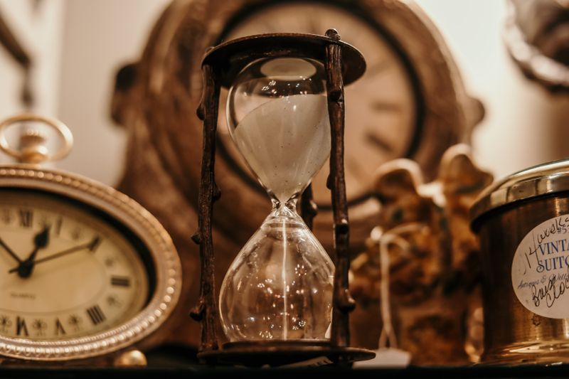
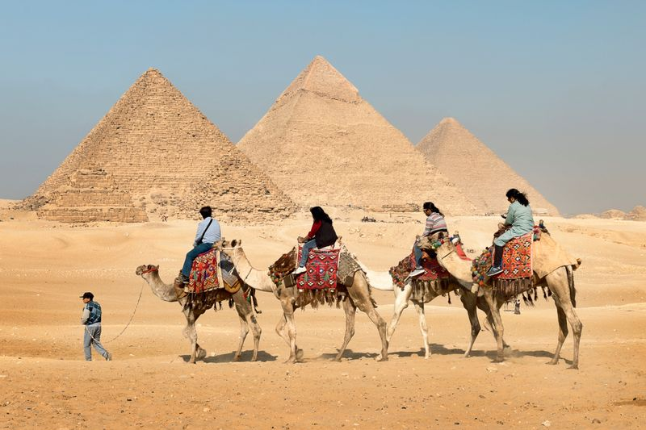
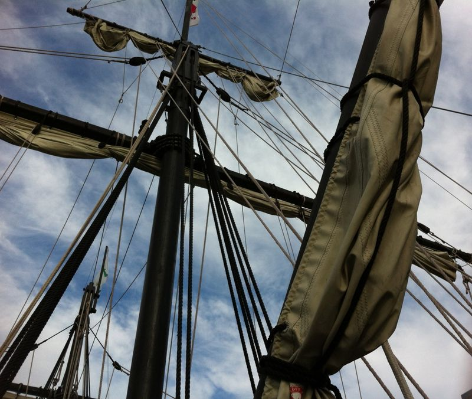

← Retour au menu
📜 Histoire — 20 Questions
Les 5 grandes périodes
❓ Q1 — Les 5 périodes dans l'ordre
Cite les 5 grandes périodes de l'histoire dans l'ordre.

⏳ 5 périodes qui se suivent...
timeline
title Les 5 périodes
section 1. Préhistoire
Avant -3000
section 2. Antiquité
-3000 à 476
section 3. Moyen Âge
476 à 1492
section 4. Temps modernes
1492 à 1789
section 5. Époque contemporaine
1789 à aujourd'hui
👀 Voir la réponse
1. Préhistoire → 2. Antiquité → 3. Moyen Âge → 4. Temps modernes → 5. Époque contemporaine
❓ Q2 — La Préhistoire
Quand commence et finit la Préhistoire ? Qu'est-ce qui marque sa fin ?
🦴 Les premiers hommes, bien avant l'écriture... 👀 Voir la réponse
La Préhistoire va des premiers hommes jusqu'à -3000 . Elle finit avec l'invention de l'écriture .
❓ Q3 — L'Antiquité
Quand commence et finit l'Antiquité ? Cite des civilisations.

🏛️ De grandes civilisations construisent des merveilles... 👀 Voir la réponse
De -3000 à 476 .Égyptiens (pyramides), Grecs , Romains (Colisée).
❓ Q4 — Le Moyen Âge
Quand commence et finit le Moyen Âge ? Quels événements ?
🏰 Des châteaux forts dans la brume... 👀 Voir la réponse
De 476 (chute de Rome) à 1492 (découverte Amérique).châteaux forts , chevaliers , rois .
❓ Q5 — Les Temps modernes
Quand commencent et finissent les Temps modernes ?

🚢 De grands bateaux explorent le monde... 👀 Voir la réponse
De 1492 (Colomb → Amérique) à 1789 (Révolution française).grandes découvertes et explorations.
❓ Q6 — L'Époque contemporaine
Quand commence l'Époque contemporaine ? Quand finit-elle ?
🇫🇷 La France se transforme... 👀 Voir la réponse
Elle commence en 1789 (Révolution française) et continue jusqu'à aujourd'hui .
Situer les périodes
❓ Q7 — Juste APRÈS l'Antiquité ?
Quelle période vient juste après l'Antiquité ?
🏰 Après les Romains, quoi ? 👀 Voir la réponse
Le Moyen Âge .
❓ Q8 — Juste AVANT les Temps modernes ?
Quelle période vient juste avant les Temps modernes ?
📚 Quelle période précède les grandes découvertes ? 👀 Voir la réponse
Le Moyen Âge .
❓ Q9 — ENTRE Préhistoire et Moyen Âge ?
Quelle période se trouve entre la Préhistoire et le Moyen Âge ?
🏛️ Cette période est au milieu... 👀 Voir la réponse
L'Antiquité .
❓ Q10 — ENTRE Moyen Âge et Ép. contemporaine ?
Quelle période se trouve entre le Moyen Âge et l'Époque contemporaine ?
🚢 Entre les châteaux et la révolution... 👀 Voir la réponse
Les Temps modernes .
Les dates charnières
❓ Q11 — Les 4 dates importantes
Cite les 4 dates qui séparent les périodes et l'événement associé.
📅 4 dates à retenir !
graph LR
A["-3000
👀 Voir la réponse
• -3000 : invention de l'écriture476 : chute de l'Empire romain1492 : Colomb découvre l'Amérique1789 : Révolution française
❓ Q12 — Que se passe-t-il en -3000 ?
Quel événement a lieu en -3000 ? Quelles périodes sépare-t-il ?
✍️ On commence à écrire... 👀 Voir la réponse
L'invention de l'écriture . Sépare la Préhistoire de l'Antiquité .
❓ Q13 — Que se passe-t-il en 476 ?
Quel événement a lieu en 476 ? Quelles périodes sépare-t-il ?
💥 Un empire s'effondre... 👀 Voir la réponse
La chute de l'Empire romain . Sépare l'Antiquité du Moyen Âge .
❓ Q14 — Que se passe-t-il en 1492 ?
Quel événement a lieu en 1492 ? Quelles périodes sépare-t-il ?
🚢 Un grand voyage... 👀 Voir la réponse
Christophe Colomb découvre l'Amérique. Sépare le Moyen Âge des Temps modernes .
❓ Q15 — Que se passe-t-il en 1789 ?
Quel événement a lieu en 1789 ? Quelles périodes sépare-t-il ?
🇫🇷 Le peuple se révolte ! 👀 Voir la réponse
La Révolution française . Sépare les Temps modernes de l'Époque contemporaine .
École, siècles et millénaires
❓ Q16 — École obligatoire
En quelle année l'école est devenue obligatoire à 6 ans en Belgique ?
📚 Tous les enfants doivent aller à l'école ! 👀 Voir la réponse
En 1914 .
❓ Q17 — Calculer un siècle
L'année 1492 est dans quel siècle ? Explique l'astuce.
💡 L'astuce magique pour le siècle...
graph TD
subgraph "💡 Astuce"
A["Cache les 2 derniers chiffres"] --> B["Ajoute 1"]
B --> C["= le siècle !"]
end
👀 Voir la réponse
1492 → 14 + 1 = 15ᵉ siècle .
❓ Q18 — Exercice siècles
Dans quel siècle sont ces années : 800 , 1789 , 2026 ?
📖 Applique l'astuce ! 👀 Voir la réponse
• 800 → 8 + 1 = 9ᵉ siècle 18ᵉ siècle 21ᵉ siècle
❓ Q19 — Calculer un millénaire
L'année 1492 est dans quel millénaire ? Et 800 ?
⏳ 1 millénaire = 1000 ans 👀 Voir la réponse
• 1492 est entre 1000 et 2000 → 2ᵉ millénaire 1ᵉʳ millénaire
❓ Q20 — Exercice final : remets dans l'ordre
Remets dans l'ordre : Moyen Âge, Époque contemporaine, Préhistoire, Temps modernes, Antiquité
📚 C'est le moment de tout rassembler !
graph LR
A["❓"] --> B["❓"] --> C["❓"] --> D["❓"] --> E["❓"]
👀 Voir la réponse
1. Préhistoire (avant -3000)Antiquité (-3000 → 476)Moyen Âge (476 → 1492)Temps modernes (1492 → 1789)Époque contemporaine (1789 → maintenant)